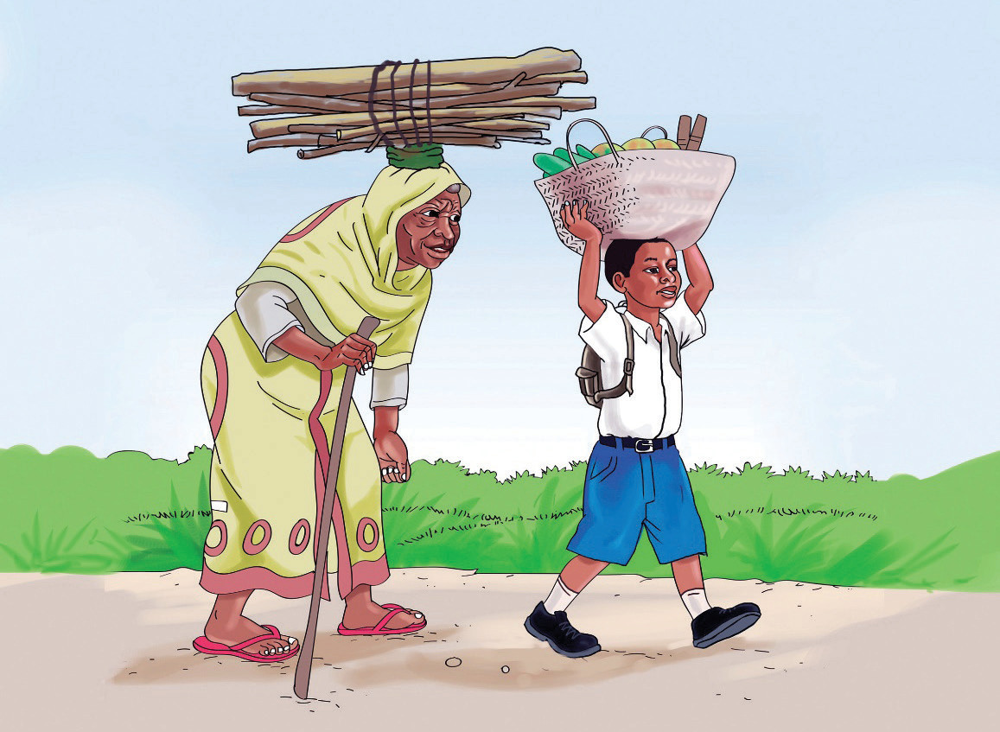

Bibi alifurahi sana. Akajibu salamu na kumpa kikapu, kisha wakaendelea na safari. Walipofika njiapanda Fikiri akamwambia bibi, “Mimi ninaelekea barabara iendayo kulia.” Bibi akamwambia Fikiri, “Asante sana mjukuu wangu. Mimi ninaelekea barabara iendayo kushoto.” Bibi alichukua kikapu chake na kumshukuru Fikiri. Kisha kila mmoja aliendelea na safari yake.